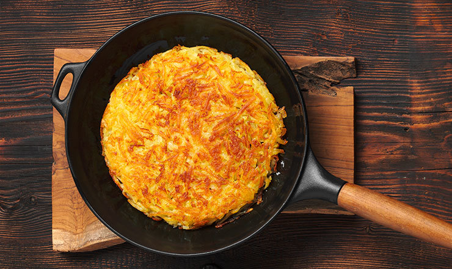

Lust auf was Neues?


Was ist besser ...................
Rösti es gibt kaum jemanden, der den knusprigen Kartoffeltraum aus der Schweiz nicht liebt. Und zwar zurecht, denn Kartoffelrösti passen einfach zu jeder Gelegenheit. Ob zum Frühstück mit Spiegelei, als Beilage zu Fisch oder Fleisch oder als köstlicher Snack zwischendurch – Rösti sind immer ein Hit. Wenn du weißt wie, sind leckere Kartoffelrösti ganz einfach zuzubereiten. Du kannst zwischen zwei Varianten wählen: aus rohen oder gekochten Kartoffeln. Und wenn du Lust auf eine fettarme Variante hast, gibt’s eine clevere Lösung: Rösti aus der Heißluftfritteuse – noch gesünder und genauso lecker.
